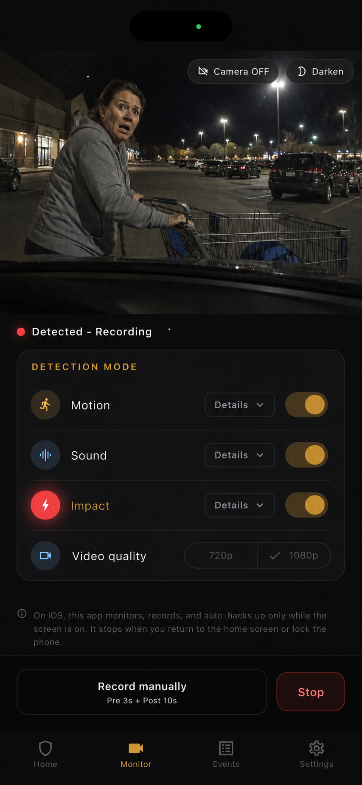

Lower setup friction
Start with a spare smartphone instead of buying and wiring a dedicated camera.
Dash cam alternative
Dash cam parking mode is powerful, but it can mean hardware cost, wiring, battery management, and installation. Parking Guard is a lighter alternative for drivers who want parked-car evidence without modifying the vehicle.

Start with a spare smartphone instead of buying and wiring a dedicated camera.
Focus on motion, sound, and impact events rather than continuous driving footage.
Best for practical parked-car evidence sessions, not every always-on scenario.
A dedicated dash cam can be better for continuous driving footage, overnight parking, permanent installation, and multi-camera coverage. If you need true always-on vehicle recording, a professional parking-mode setup may be the better fit.
Parking Guard does not try to replace that category. It is designed to make parked-car evidence easier to start with a phone you already have.
There is no vehicle wiring, no professional installation, and no fixed hardware location. You can move the phone between cars, aim it at the risk area, and remove it when you are done.
For many parking-lot situations, that flexibility matters more than permanent installation.
Parking Guard records event clips around detection, not long driving sessions. It saves local video, a trigger frame, and metadata, then lets you review, export, delete, or optionally back up evidence.
That workflow is useful when you care about the incident moment: a door ding, hit-and-run, cart contact, suspicious approach, or impact.
Choose a dash cam if you want permanent, always-on, driving-plus-parking coverage. Choose Parking Guard if you want a no-wiring evidence layer for parked-car risk areas using a spare phone.
Some drivers may use both: a dash cam for general coverage and Parking Guard for a temporary angle pointed at a specific door, bumper, or parking-lot side.
FAQ
Short answers, with the same limits the app shows in its main product page.
No. It is a spare-phone parked-car evidence app. Dedicated dash cams are still better for permanent always-on coverage.
It avoids wiring and installation, and it can be aimed temporarily at the specific area you want to monitor.
It is designed around parked-car evidence, not continuous driving dash-cam recording.